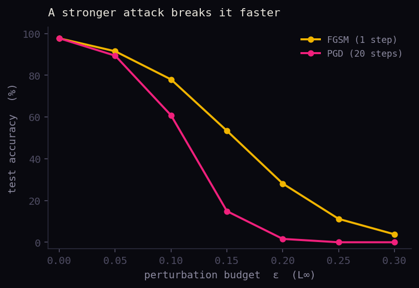
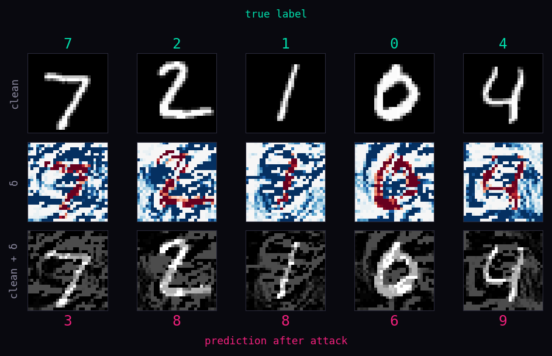

A neural network can reach high accuracy and still be trivially brittle. An adversarial example is an input nudged by a perturbation that is small in some norm — invisible to a human — yet chosen to maximise the model's loss. The classifier flips its prediction with high confidence.
The cheapest attack is the Fast Gradient Sign Method (Goodfellow et al., 2015). It takes a single step in the direction that most increases the loss, then clips the step size in the L∞ ball of radius ε:
# one gradient step w.r.t. the input, sign-of-gradient, magnitude ε
Projected Gradient Descent (Madry et al., 2018) is FGSM run for several small steps, re-projecting back into the ε-ball after each one. It is a much stronger attack and the de-facto standard for evaluating robustness:
# α = step size, Π = clip back into the ε-ball, repeat for k steps
Implementation
import torch import torch.nn.functional as F def fgsm(model, x, y, eps): # single-step L-inf attack x = x.clone().detach().requires_grad_(True) loss = F.cross_entropy(model(x), y) grad = torch.autograd.grad(loss, x)[0] x_adv = x + eps * grad.sign() return x_adv.clamp(0, 1).detach() def pgd(model, x, y, eps, alpha, steps): # iterative L-inf attack, projected back into the eps-ball x_adv = x.clone().detach() x_adv += torch.empty_like(x_adv).uniform_(-eps, eps) # random start x_adv = x_adv.clamp(0, 1) for _ in range(steps): x_adv = x_adv.detach().requires_grad_(True) loss = F.cross_entropy(model(x_adv), y) grad = torch.autograd.grad(loss, x_adv)[0] x_adv = x_adv + alpha * grad.sign() # project: keep within eps of the original x, stay valid pixels x_adv = torch.min(torch.max(x_adv, x - eps), x + eps) x_adv = x_adv.clamp(0, 1) return x_adv.detach()
The network under attack
import torch.nn as nn # deliberately small: two conv layers + a linear head class SmallNet(nn.Module): def __init__(self): super().__init__() self.net = nn.Sequential( nn.Conv2d(1, 16, 3, padding=1), nn.ReLU(), nn.MaxPool2d(2), nn.Conv2d(16, 32, 3, padding=1), nn.ReLU(), nn.MaxPool2d(2), nn.Flatten(), nn.Linear(32 * 7 * 7, 10), ) def forward(self, x): return self.net(x)
Evaluation loop
import torch from attacks import fgsm, pgd def accuracy_under_attack(model, loader, attack, **kw): model.eval() correct = total = 0 for x, y in loader: x_adv = attack(model, x, y, **kw) if attack else x pred = model(x_adv).argmax(1) correct += (pred == y).sum().item() total += y.size(0) return correct / total # eps = 0.3 on [0,1] pixels is the standard MNIST threat model clean = accuracy_under_attack(model, test, None) fgsm_acc = accuracy_under_attack(model, test, fgsm, eps=0.3) pgd_acc = accuracy_under_attack(model, test, pgd, eps=0.3, alpha=0.01, steps=40) print(f"clean {clean:.2f} | fgsm {fgsm_acc:.2f} | pgd {pgd_acc:.2f}")
Results — running it

SmallNet trained on MNIST, then attacked at increasing ε. Both attacks degrade accuracy as the budget grows, but PGD — taking 20 steps inside the ε-ball instead of FGSM's single step — finds far stronger perturbations. At ε = 0.3 the model holds 3.8% under FGSM but drops to 0% under PGD.

What the attack actually does. Top: clean test digits (true label in green). Middle: the perturbation δ found by PGD (red/blue ≈ ±0.3 per pixel). Bottom: the adversarial image x + δ — visually still the same digit to a human, but the model now reads it as the pink label. The perturbation is structured, not random: it traces the strokes that most change the decision.
A standard-trained SmallNet reaches 97.7% clean accuracy but collapses to ~4% under FGSM and to 0% under PGD at ε = 0.3. The perturbation needed to do this is, to the eye, indistinguishable from the original digit — the model's decision surface is far more jagged than its accuracy suggests.